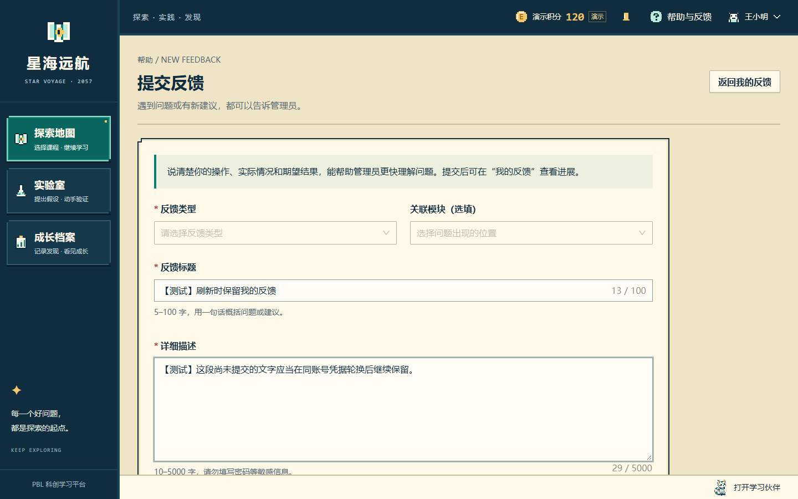
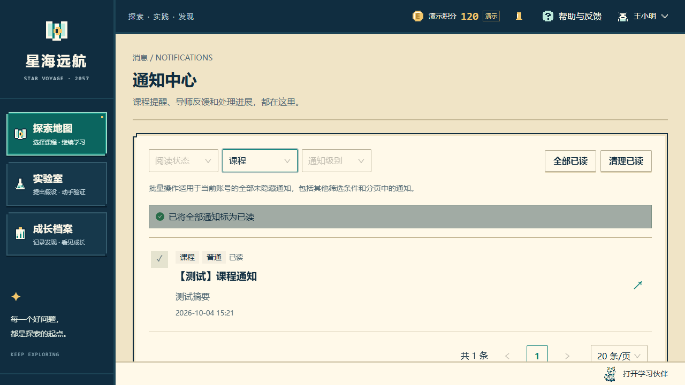
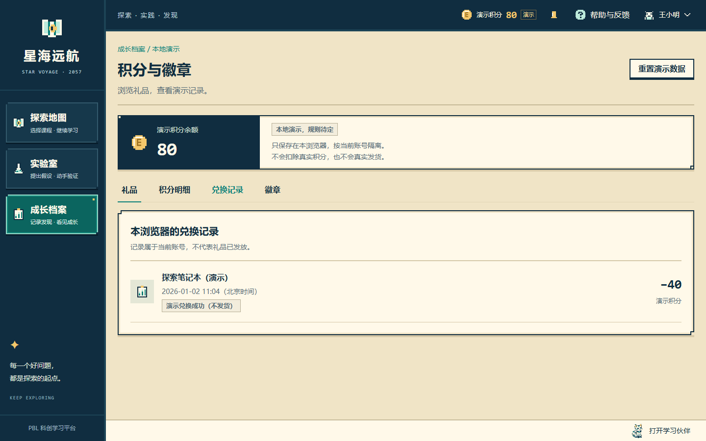
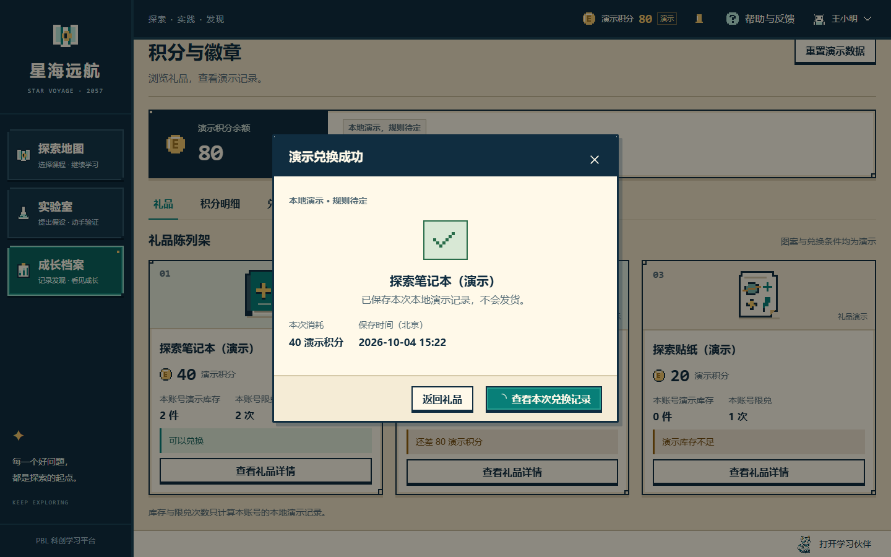
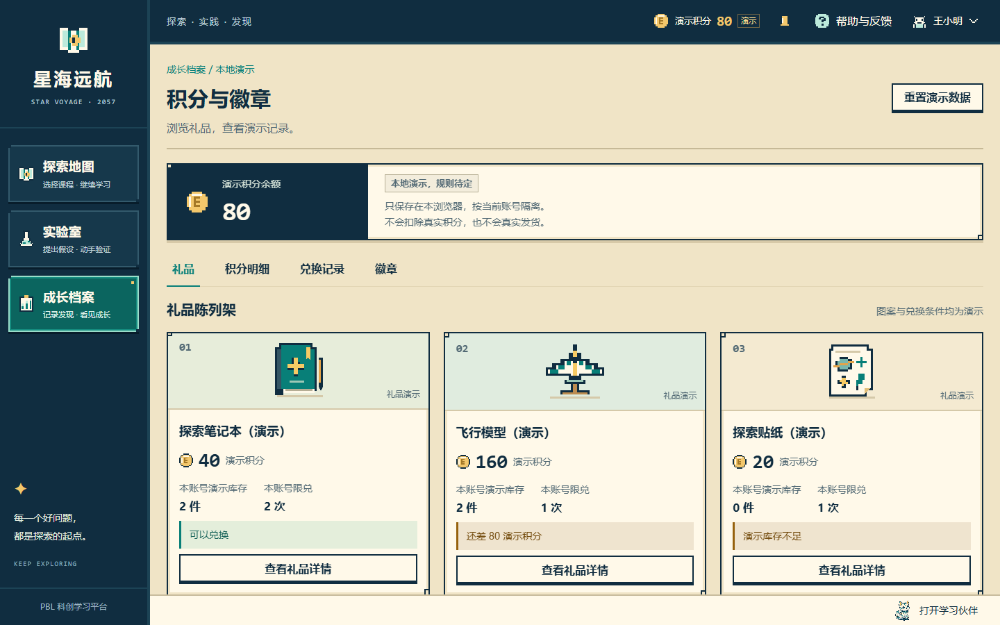
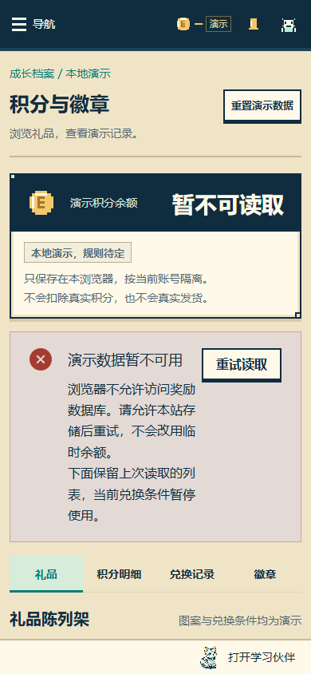

刷新前：B 标签未提交的反馈
真实登录，输入只存在当前表单。

实际 Edge 154.0.4258.37 浏览器截图。隔离测试账号、临时数据库；沿用现有视觉，本轮没有新增业务页面。
真实登录，输入只存在当前表单。
A 通过真实 refresh 轮换；B 的 me 返回 200，DOM 和文字均保持。

写入等待期间切筛选；操作完成后重新读取当前列表，不再残留未读行。

余额 80、旧编号及 2026-01-02 的时间和明细迁入原生数据库；不是重新发放。

重置后兑换一次，余额 80；成功结果等待事务 complete。

真实 BroadcastChannel 只通知变化，本页从 IndexedDB 重读，礼品剩余 2 件。

故障注入；不显示虚假 0 或初始余额，可重试，恢复后仍为已保存的 80。
